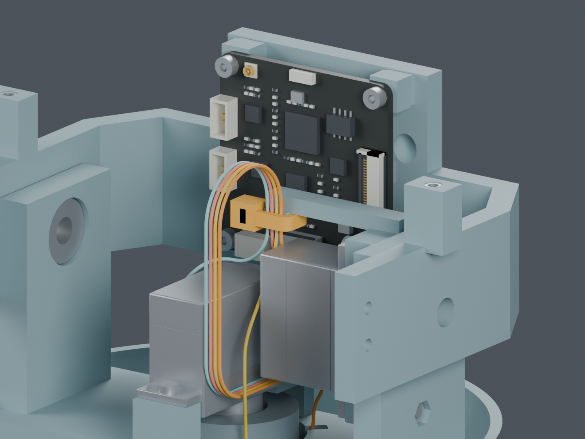
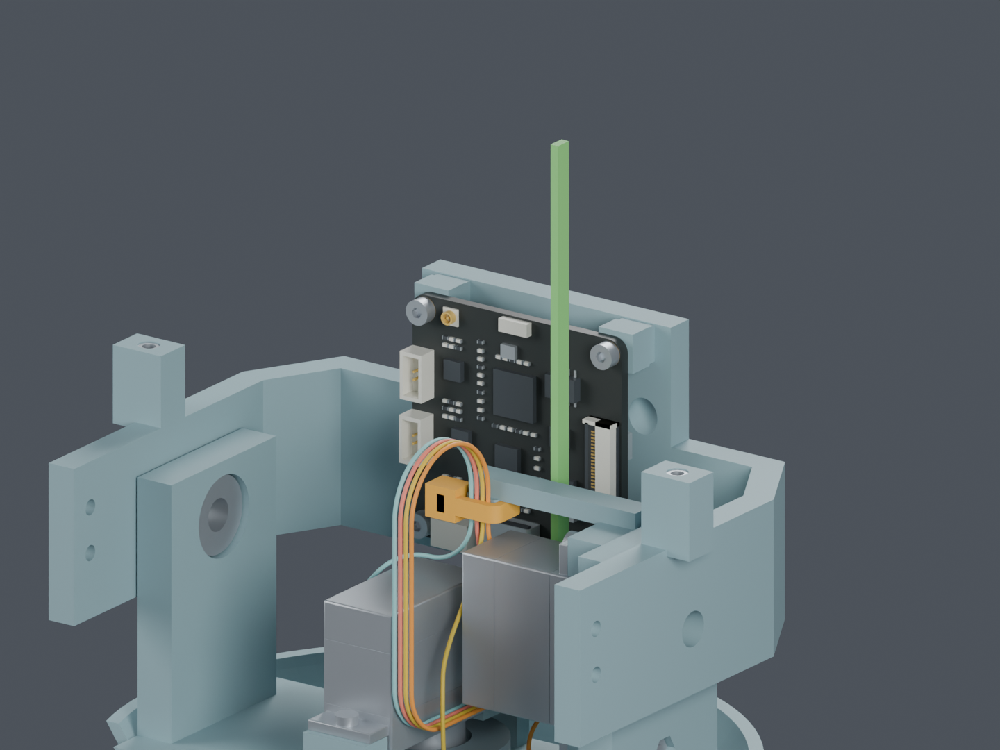

CAM 固定和局部装入已有候选，完整线束仍未完成
未应用主模型。两处固定座并入已有打印件，配两根扎带；加上前一阶段通道，共涉及三个打印件候选。仍需把局部步骤连成完整带线装配工序。

橙色为扎带估计外形，线色仅区分机械路线。屏幕、相机、头壳等尚未安装；不会作为主模型显示。
| 已补的检查 | 通过范围 |
|---|
| 固定座、扎带及线路 | 130 个组合姿态；两个固定座与主体连通，不增加打印件。 |
| 导线在固定点的位置 | 24 个位置 × 130 姿态，材料点数值变化约 0.000016 mm；不是制造精度或夹持力证明。 |
| 剪尾工具与临时长尾 | 工具进出与一条向上弯起的 80 mm 长尾候选通过；实际穿入、收紧尚未验证。 |
| 局部穿颈 | 四个方向各 410 个包络区间，要求仍为 0.3 mm。端子压接后最大尺寸仍待厂家。 |
| CAM 板后装 | 板卡抬高 6 mm 插线再落座：16 个位置、64 条完整线对实体检查及逐元件刚性平移扫掠通过；6 mm 是插合行程预留。 |

绿色长尾只在收紧、剪尾时存在。图示空间不证明扎带实际弯折和手工收紧可行。
仍未完成的线束工作
身体端应力释放；穿颈、成形、插接与扎带收紧的完整衔接；另七根跨关节线和 FFC；候选通道/固定座的结构及制造复核；最终供应商制作图。
本次柔性装配只检查离散位置，完整线束仍 BLOCKED。三个打印件候选均未进入正式 STL 或装配视频；轴颈采样最薄壁仍约 1.48 mm，强度未验证。
距离实物前工作完成仍有五类：完整线束、反力夹初装、采购件及安装、供应商接口资料、质量与驱动预算。主模型为 M1.48。
独立 Blender固定座反面完整说明和限制项目剩余清单
检查记录与来源
固定座导线材料点工具与长尾穿颈CAM 后装文件哈希交付核对
早期 neck_feed.json 是构造切削面的边界重放诊断，当前穿颈依据为 neck_feed_verified.json。未放宽 0.3 mm 间隙或修改打印件取得通过。